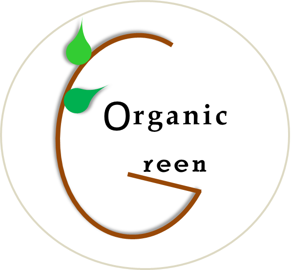

Organic Green
Let's Plant Organic
Importance of Organic Farming
It sound's great when it comes to Organic vegetables and fruits
but planting oraganic means more care toward's soil and cultivation .
The key factor that play's an important role is the Ph value.
Ph value ranges from 0 - 14, below 7 it is resulted as acidic and above 7 is basic .
It is very important to maintain a perfect Ph of a soil to grow a specific crop.
To increase the fertility of soil dosage of organic fertilizers is a crutial part but Their dosage should be applied in a balance form, excessive usage can harm the plants.
How To take the Soil Samples?
1. Dig a 6 - 8 inch deep hole and collect that part soil in packets for testing.
2. Take 15 soil samples from each area (depends on the area of a land).
3. Test the soil samples using Ph meter , soil testing kit or at the agricultural labs.
Save Soil From Errosion.
Are Climatic conditions Important?
Truely, as Nutrient levels, Moisture levels are the key factors for farming equally Climatic conditions are crutial too.
and there are mainly three seasons
1. Kharif
2. Rabi
3. zaid
| Seasons of Crops | Months |
|---|---|
| Kharif(monsoon crops) | May end - October |
| Rabi(winter crops) | Mid October - April |
| Zaid(Summer crops) | March - June |
Let's explore some examples
| Crops | Seasons |
|---|---|
| Rice | |
| Maize | |
| Methi | Kharif(monsoon crops) |
| Cluster Beans(Gavar) | |
| Ginger | |
| Sugarcane |
| Onions | |
| Wheat | |
| Carrot | |
| Cilantro(Coriander) | |
| Mint(pudina) | |
| Sweet potato | Rabi(winter crops) |
| Tomato | |
| Raddish | |
| Chilli | |
| Tinda | |
| Lemon | |
| Potato | |
| Spinach(palak) | |
| Cabbage | |
| Okra(bhendi) | |
| Cauliflower | |
| Eggplant(brinjal) | |
| Garlic |
| Pumpkin | |
| Cucumber | |
| Bottle gourd | Zaid(summer crops) |
| Bitter gourd |
